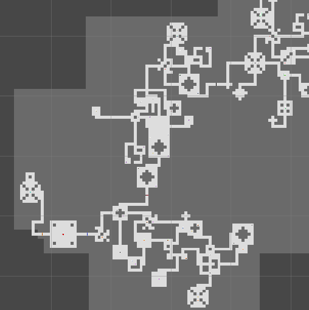

2D Procedural Level Design

Unity
2021
Play for yourself here!To strengthen my knowledge of level design strategies, I created a procedural dungeon generator inside of Unity. On each launch a C# script runs through multiple systems to create a brand new dungeon for the player to play through. This level also dynamically places enemies and powerups to create an engaging experience.
The procedural system in this project follows a semi-constructionist structure. Each of the possible rooms in the dungeon are created as a Unity prefab during development. When the procedural system runs, it pulls from a map of these rooms with the rooms’ sizes as the key. The map is created in chunks, each representing a different stage of the level. The first chunk covered both the setup and hook phases of the game. There is always a starting room and a mini-boss room in this stage, and the rooms and enemies available in this chunk are designed to introduce the player to the game. The next 2-3 chunks are the development phases. The rooms in these chunks can be up to twice as large as the setup rooms. Each development chunk introduces a new enemy, and the enemy stats are increased to give the player a consistent challenge. The level ends with a turn and resolution chunk. This chunk includes a final boss battle with one of three different bosses. After the boss is defeated, a small trail of setup rooms are placed to ease the player towards the end of the level.